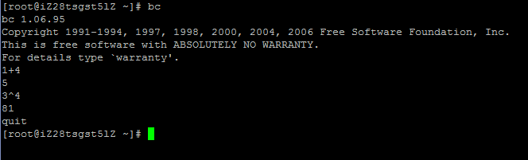
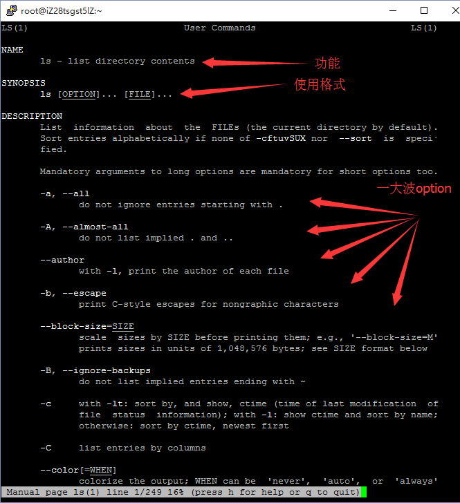
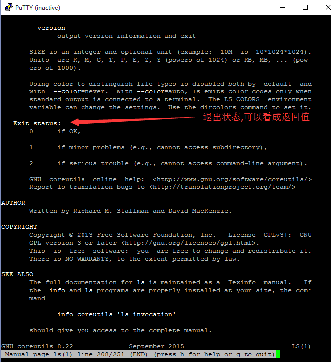
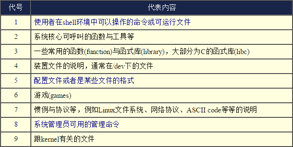
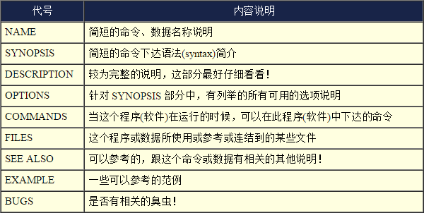
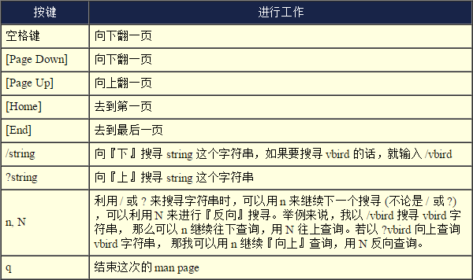
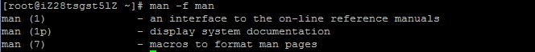
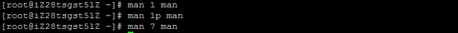
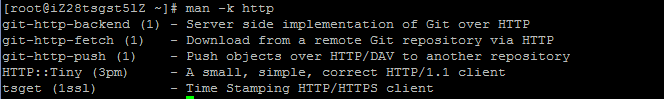

先补充下上节课说漏的地方，1.mv的重命名的作用，2.参数的全称和简称。
然后讲讲上节课的作业:
1.我想把ls -a缩写成la，该怎样做？
alias la='ls -a'
2.我想在/home/student里创建一个目录为"homework"，在homework里面把上面在/home/aoeiuv/student目录下的自己的文件复制过来，然后重命名为"你自己的学号wawa"，然后在当前目录下创建rara目录，然后把前面刚重命名的文件复制进去，然后把rara删掉。请写出一连串一系列的操作。
cd /home/student
mkdir homework
cp /home/aoeiuv/student/B15XXXXXX .
mv B15XXXXXX B15XXXXXXwawa
mkdir rara
cp B15XXXXXXwawa rara
rm -rf rara
下来是命令：
1.简单计算器：bc

2.帮助：man

简要的功能,使用的格式语法,使用的选项。

返回值,0表示没问题,1表示小问题,2表示大问题。

以上是开头那个数字表示的内容。

这是man下大致分成的每个部分。

这是man下的一些操作,常用的就是上下翻页滚动,查找,退出

man -f可以查看目前有多少该命令的帮助文档。

man X 命令可以看特定的帮助文档，默认为搜索到的第一个，一般也是数字较小的那个。

man -k 关键词,在man的命令的简要功能介绍里查找
whatis [命令或者是数据] <==相当于 man -f [命令或者是数据]
apropos [命令或者是数据] <==相当于 man -k [命令或者是数据]
有兴趣的同学可以看看另外一个帮助命令:info(反正我一般是用man)
3.数据同步写入磁盘：sync
在Linux系统中,为了加快数据的读取速度,在默认的情况中,某些已经加载内存中的数据将不会直接被写回硬盘,而是先缓存在内存当中,这样的话万一系统因为某些特殊情况造成不正常关机(例如停电),由于数据尚未被写入硬盘当中,所以就造成数据的更新不正常。
4.shutdown [-t 秒] [-arkhncfF] 时间 [警告信息]
选项与参数：
-t sec ： 几秒后关机
-k ： 没有关机,只是发送警告信息
-r ： 在将系统的服务停掉之后就重新启动(常用)
-h ： 将系统的服务停掉后,立即关机(常用)
-f ： 关机并启动之后,强制略过fsck的磁盘检查
-F ： 系统重新启动之后,强制进行fsck的磁盘检查
-c ： 取消已经在进行的shutdown命令内容
时间 ： 指定系统关机的时刻
其他参数可自己man查看
关机的命令有:shutdown halt poweroff。
shutdown以一种安全的方式关闭系统。所有登陆用户都可以看到关机信息提示，并且 login 将被阻塞。可以指定立刻关机，也可以指定系统在一定的延时后关机。所有进程都将接收到 SIGTERM 信号。这可以使 vi 等程序有时间将处于编辑状态的文件进行存储，邮件和新闻程序进程则可以将所有缓冲池内的数据进行适当的清除等等。 shutdown 通过通知 init 进程，要求它改换运行级别来实现。运行级别 0 用来关闭系统，运行级别 6 用来重启系统，运行级别 1 用来使系统进入执行系统管理任务状态，如果没有给出 -h 或 -r 标志时，这是 shutdown 命令的默认工作状态。
halt是最简单的关机命令。其实halt就是调用shutdown -h。halt执行时会杀死应用进程，执行sync系统调用，文件系统写操作完成后就会停止内核。
poweroff在关闭计算机操作系统之后，最后还会发送ACPI指令，通知电源，最后切断电源供应，当然路由器等嵌入系统不支持ACPI的，所以这个无效。
5.重新启动：reboot
6.切换运行等级：init
#0 停机（千万不能把initdefault 设置为0）
#1 单用户模式
#2 多用户，没有 NFS(和级别3相似，会停止部分服务)
#3 完全多用户模式
#4 没有用到
#5 x11(Xwindow)
#6 重新启动（千万不要把initdefault 设置为6）
一般常用的是0,3,5,6